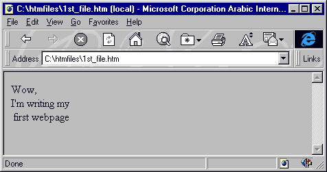
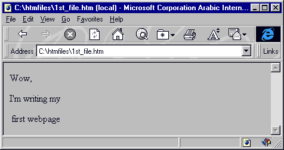

الدرس الأول
الأساسيات
[الأساسيات]
[الألوان]
[الخطوط]
[الفقرات والقوائم]
[الصور والرسومات]
[الوصلات التشعبية]
[الجداول1]
[الجداول2]
[الإطارات1]
[الإطارات2]
[الإطارات3]
[وسوم من هنا وهناك]
[الخرائط الصورية]
[النماذج1]
[النماذج2]
[الوسوم الخاصة]
[الويب واللغة العربية]
[وسوم Meta]
أهلاً وسهلاً بك إلى الدرس الأول من دروس HTML. سوف أقوم في هذا الدرس بسرد الوسوم الأساسية لصفحة الويب ومناقشتها معك واحداً تلو الآخر. لنصل في النهاية إلى إنشاء صفحة ويب بسيطة.
لنأخذ الوسوم التالية:
وسم البداية وسم النهاية <HTML> </HTML> <HEAD> </HEAD> <TITLE> </TITLE> <BODY> </BODY>
ماذا تلاحظ؟ أن كل منها يتألف من زوج من الوسوم أحدهما وسم البداية، والآخر وسم النهاية. ويتميز وسم النهاية بوجود الرمز / . تأمل الرسم التالي، فهو يعطي فكرة عن تركيب ملف Html
E إذن فملف Html يبدأ دائماً بالوسم <HTML> وينتهي بالوسم </HTML>. لا تنسى ذلك!
أما الوسم <HEAD> فيحدد بداية المقطع الذي يحتوي على المعلومات الخاصة بتعريف الصفحة. كالعنوان الظاهر على شريط عنوان المتصفح. وهذا العنوان بدوره يحتاج لأن يوضع بين الوسمين: <TITLE> … </TITLE> وبالطبع يجب كتابة الوسم </HEAD> لكي ننهي هذا المقطع.
نأتي إلى الوسم <BODY> والذي يتم كتابة نصوص صفحة الويب ضمنه، بالإضافة إلى إدراج الصور والجداول وباقي محتويات الصفحة. وهو أيضاً يحتاج إلى وسم الإنهاء </BODY>
ما رأيك لو نبدأ بتطبيق هذه المعلومات بصورة عمليه؟ هيا… قم بفتح برنامج المفكرة واكتب ما يلي:
<HTML>
<HEAD>
<TITLE>
This is a test Webpage
</TITLE>
</HEAD>
<BODY>
Wow, I'm writing my first webpage
</BODY>
</HTML>والآن قم بحفظ ما كتبته في ملف وبأي اسم تختاره. ولا تنسى أن الامتداد المستخدم في أسماء ملفات HTML هو htm. أو html. مثلاً أنا اخترت الاسم 1st_file.htm ومن الأفضل أن تقوم بإنشاء مجلد مستقل على القرص الصلب لكي تحفظ به ملفاتك فهذا يسهل عليك عملية استرجاعها للعرض أو التحديث وليكن هذا المجلد مثلاً بالاسم C:\htmfiles (أو بأي اسم يحلو لك).
حان وقت العرض، لكي نشاهد نتيجة ما كتبناه. قم بتشغيل متصفح الإنترنت الذي تستخدمه. فإذا كان Netscape Navigator اختر الأمر Open File… من قائمة File. أما في MS Internet Explorer فاختر الأمر Open… من قائمة File. ثم حدد المسار الذي يوجد به الملف. أنا شخصياً قمت بتحديد المسار التالي:
C:\htmfiles\1st_file.htm
وذلك طبعاً حسب الافتراضات السابقة التي اتبعتها عند تخزين الملف. وهذا ما حصلت عليه:

وماذا عنك؟ هل حصلت على نفس النتيجة؟ إذن مبروك J لقد قمت بإنشاء أول صفحة ويب خاصة بك. (وإلا، إذا لم تحصل على نفس النتيجة قم بالنقر هنا)
وقبل أن نستمر أريد أن أنبهك إلى بعض الملاحظات عند كتابة صفحات الويب:
لا يوجد فرق بين كتابة الوسوم بالأحرف الإنجليزية الكبيرة UPPERCASE أو الأحرف الصغيرة lowercase. لذلك تستطيع الكتابة بأي شكل منهما أو حتى الكتابة بكليهما.
إن المتصفحات لا تأخذ بعين الاعتبار الفراغات الزائدة أو إشارات نهاية الفقرات (أي عندما تقوم بضغط مفتاح Enter) التي تجدها هذه المتصفحات في ملف Html. وبعبارة أخرى فإن باستطاعتك كتابة ملفك السابق بالشكل التالي:
<HTML><HEAD><TITLE> This is a test Webpage </TITLE></HEAD><BODY>
Wow, I'm writing my first webpage </BODY></HTML>أو بالشكل التالي:
<HTML>
<HEAD>
<TITLE>
This
is a
test
Webpage
</TITLE>
</HEAD>
<BODY>
Wow,
I'm
writing
my
first
webpage
</BODY>
</HTML>أو حتى بهذا الشكل:
<HTML> <HEAD> <TITLE>
This is a test Webpage
</TITLE>
</HEAD>
<BODY>
Wow, I'm writing my first webpage
</BODY>
</HTML>وفي كل الحالات ستحصل على نفس النتيجة. وإذا كنت من تلك النوعية من الناس التي لا تصدق كل ما يقال… تستطيع أن تجرب ذلك بنفسك!!! هيا جرب.
لكن هذا لا يعني أن الفقرة المكونة مثلاً من عشرة أسطر ستمتد إلى عدة أمتار بعرض الشاشة. كلا بالطبع لأن المتصفح سيقوم بعمل التفاف تلقائي لها بحسب عرض الشاشة، مهما كان مقدار هذا العرض.
والآن قد تتساءل، إذن كيف يمكن التحكم بمقدار النص المكتوب في كل سطر وكيف يمكن تحديد نهاية الفقرة وبداية الفقرة التي تليها؟ سؤال وجيه!!! والإجابة عليه هي:سوف نستخدم الوسم <BR> لتحديد النهاية للسطر. والبدء بسطر جديد (لاحظ أن هذا الوسم مفرد، أي ليس له وسم نهاية).
ونعود إلى المثال السابق، قم بتعديل الملف لكي يصبح بالشكل التالي
<HTML>
<HEAD>
<TITLE>
This is a test Webpage
</TITLE>
</HEAD>
<BODY>
Wow, <BR> I'm writing my <BR>
first webpage
</BODY>
</HTML>
وهناك أيضا الوسم <P> الذي يقوم تقريباً بنفس عمل الوسم السابق أي أنه ينهي السطر أو الفقرة ويبدأ بسطر جديد لكن مع إضافة سطر إضافي فارغ بين الفقرات.
المزيد عن هذا الوسم في الدرس الرابع الفقرات<HTML>
<HEAD>
<TITLE>
This is a test Webpage
</TITLE>
</HEAD>
<BODY>
Wow, <P> I'm writing my <P>
first webpage
</BODY>
</HTML> أما الفراغات فتعتبر رموزاً خاصة لذلك لا نستطيع التحكم بها وبعددها إلا باستخدام الوسم (والأحرف هي اختصار للعبارة Non Breakable Space). وإذا أردت إدخال عدة فراغات بين نص وآخر ما عليك إلا كتابة هذا الوسم بنفس عدد الفراغات المطلوب. كما يجب عليك التقيد بالأحرف الصغيرة هنا.
إذن لنعد إلى المفكرة ونكتب ملفنا بالشكل التالي:
<HTML>
<HEAD>
<TITLE>
This is a test Webpage
</TITLE>
</HEAD>
<BODY>
Wow,
I'm writing
my first webpage
</BODY>
</HTML>
وبمناسبة الحديث عن الرموز الخاصة فهناك العديد من هذه الرموز والتي يجب أن تكتب بصورة معينة وباستخدام الوسوم وليس مباشرة بصورتها العادية. خذ مثلا إشارتي أكبر من وأصغر من وإشارة الاقتباس ". كل هذه الإشارات تستخدم أصلاً مع الوسوم فهي محجوزه ضمن مفردات لغة HTML ومن الخطأ استخدامها بصورتها الصريحة لئلا يؤدي ذلك إلى حدوث مشاكل في طريقة عرض الصفحة. كذلك فإن هناك رموزاً غير موجودة أساساً على لوحة المفاتيح كرمز حقوق الطبع © ورمز العلامة المسجلة ® ونحتاج إلى هذه الطريقة(طريقة الوسوم) لكتابتها. وإليك جدول ببعض هذه الرموز ووسومها المكافئة. وألفت نظرك إلى أنها تكتب كما هي في الجدول وبدون إشارتي <>
وصلنا إلى النهاية... نهاية الدرس الأول. أتمنى أن تكون قد وجدت فيه من المتعة والفائدة ما يجعلك تنقر هنا للإنتقال فوراً إلى الدرس الثاني.

| إتش.بي بالعربية © 1998-1999 يحيى الشريف |
H.P in arabic © 1998-1999 Yahya Al-Sharif |